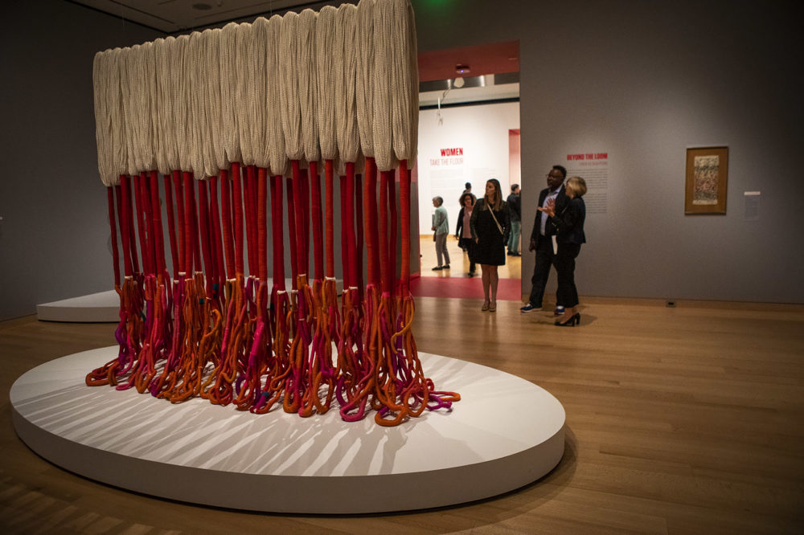
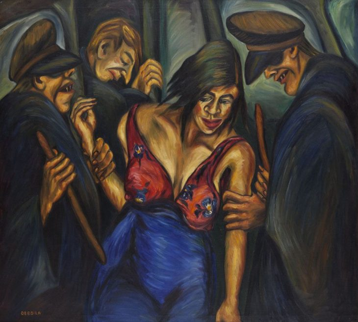

Fernando Botero
Nacido en Medellín, Colombia, en 1932, es uno de los artistas plásticos más reconocidos a nivel internacional. Su estilo único se caracteriza por la exageración de las proporciones corporales, dando vida a figuras redondas y robustas.

Alejandro Obregón
El artista nacionalizado colombiano fue uno de los artistas plásticos más influyentes en la historia del arte colombiano. Su obra abarca diversas formas de expresión artística, desde la pintura hasta la escultura, y ha dejado una marca significativa en la escena artística latinoamericana. Obregón es considerado uno de los máximos representantes del expresionismo abstracto en Colombia.

Olga de Amaral
Es una destacada artista cuya contribución única al arte contemporáneo ha ganado reconocimiento internacional, y su enfoque innovador ha dejado una marca significativa en la escena artística global. Las obras de arte de Olga de Amaral se caracterizan por el uso de materiales pocos convencionales como textiles y fibras naturales, combinados con técnicas tradicionales y modernas.

Enrique Grau
Fue un prominente pintor y escultor colombiano, reconocido por su contribución al arte moderno y su empeño con la representación de la cultura afrodescendiente en sus obras de arte. Nacionalizado en Colombia, Grau fue parte de la generación de artistas que emergió en la década de 1950 y desempeñó un papel fundamental en la consolidación de la identidad artística de su país.

Débora Arango
Nacida en Medellín, Colombia, en 1907 y fallecida en 2005, fue una destacada pintora que desafió las convenciones sociales y artísticas de su época al abordar temas controversiales y por su activismo a través del arte.
